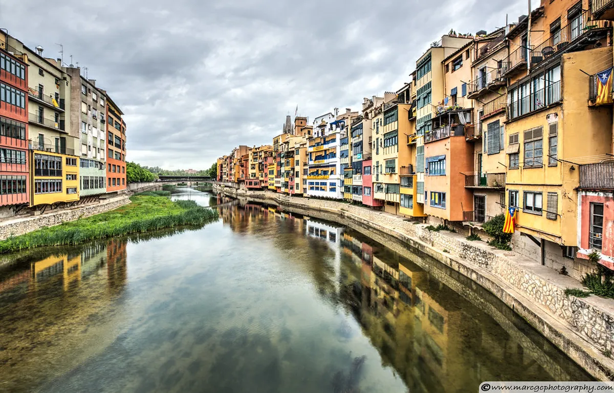
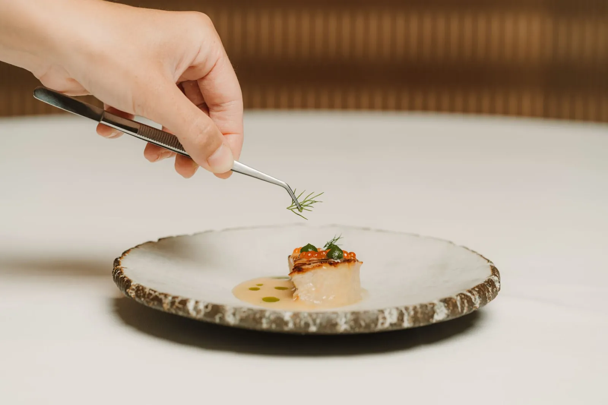
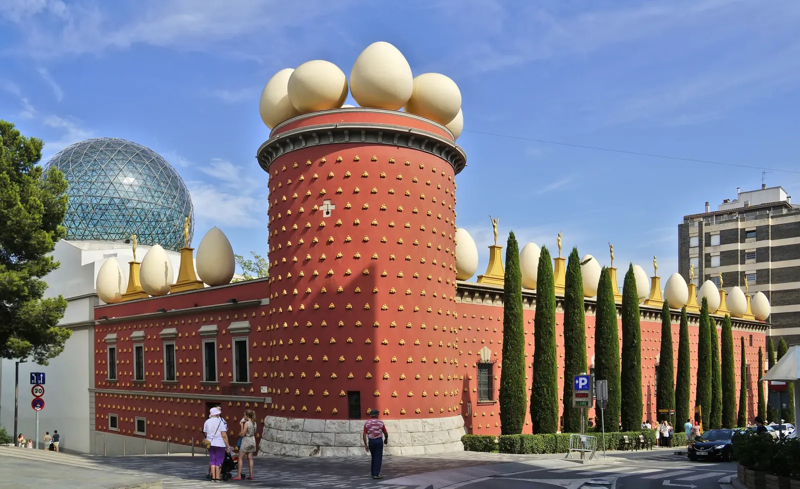
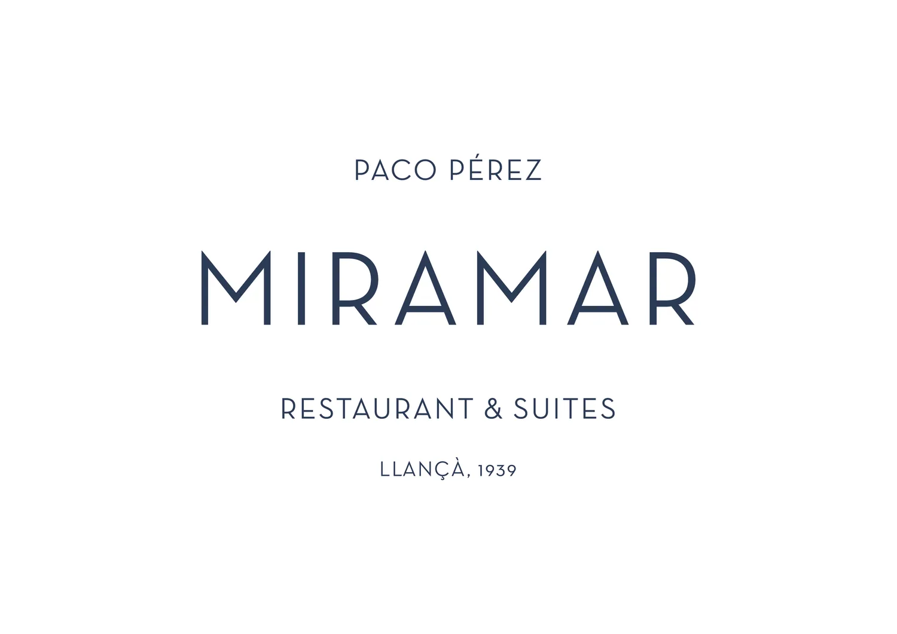

Choose your table
Book this before anything else — the restaurant shapes the whole weekend. Girona province holds 20 Michelin stars across 15 restaurants.[1]
Twice ranked #1 in the World's 50 Best (2013, 2015). Three brothers — Joan (savoury kitchen), Josep (80,000-bottle cellar), Jordi (desserts) — 60 staff per service. Single Festival Menu: appetizers + 12 courses + 3 desserts. Smart casual; no flip-flops.

A 110-year-old restored carriage carpentry in a quiet Baix Empordà village.[6] Two rooms — one with a chef's table overlooking the open kitchen.[7] Taxi viable from Girona; pair the day with medieval stone villages Pals and Peratallada nearby.
13th-c. farmhouse expanded by RCR Arquitectes (Pritzker 2017) with signature 3 m-tall glass pavilions.[10] Anchor a day in La Garrotxa volcanic park — Fageda d'en Jordà beechwood forest, Santa Margarida crater. 5 overnight rooms.
| If you want… | Choose |
|---|---|
| City-only weekend, no car | El Celler de Can Roca — city centre |
| Closest 2-star, taxi viable | Bo.TiC — 28 min, Baix Empordà |
| Most striking dining space | Les Cols — Pritzker-designed glass pavilion |
| Lowest price among 2-stars | Les Cols — €180 vs €190–250 |
| Seafood-forward, coastal setting | Miramar — Llançà seafront |
| Stay overnight, skip the drive back | Miramar (5 suites) or Les Cols (5 glass rooms) |
The weekend
Suggested rhythm — adapt to which restaurant you booked. If dining out of town, swap Saturday and Sunday order.
- AVE/Avant from Barcelona Sants: 38 min fastest, ~30 trains/day, from ~€8–18 booked ahead.[32]
- Walk to the Onyar bridges at dusk: Pont de les Peixateries Velles (Eiffel's ironwork company, 1877) frames the Cathedral and the ochre Cases de l'Onyar.[30]
- Vermouth + pintxos on Plaça de la Independència — arcaded square, bars spill outside evening.
- Free Passeig de la Muralla city-walls walk — 1–2 h, best skyline views, open from 8h.[18]
- Cathedral — 90 baroque steps, world's widest Gothic nave (22.98 m[17]), Tapestry of Creation in the Treasury. €5; free Sunday mornings.
- Basilica de Sant Feliu — 4th-c. sarcophagi, 14th-c. Recumbent Christ. Combo ticket €7.50 with Cathedral.[33]
- El Call — best-preserved Jewish quarter in Europe, free to wander; museum €6.[21]
- Arab Baths — 12th-c. Romanesque bathhouse, €3, Mon–Sat 10–18h.[19]
- Mercat del Lleó for lunch — municipal market since 1944, 50+ stalls and an in-market bar.[23]
- Rocambolesc (Carrer Santa Clara 50) — Jordi Roca's gelateria; the closest you'll get to El Celler without a reservation.[22]
- Optional: easy half-day at Lake Banyoles (6.9 km flat loop) or a Carrilet II cycling leg toward the coast.
- Figueres: Dalí Theatre-Museum — 30 min by train hourly, €18.50. Spain's most-visited museum outside Madrid/Barcelona.[25]
- Besalú: 12th-c. Romanesque bridge + medieval fortifications — drive 30–40 min.[27]
- Costa Brava coves: Calella de Palafrugell or Tossa de Mar — car 30–40 min; Camí de Ronda coastal path links coves.
- Cadaqués + Cap de Creus: whitewashed Dalí country + Spain's easternmost cape — 1.5 h car.[36]
Old town sights
All within a 15-minute walk of each other inside the Barri Vell.
World's widest Gothic nave at 22.98 m.[17] 90 baroque steps (finished 1607[34]). Tapestry of Creation in the Treasury. GoT Season 6: Cathedral steps = Great Sept of Baelor.[35]
Carolingian ramparts — among the longest medieval walls in Europe. Torre Gironella: near-360° views toward the Pyrenees. Enter near the Cathedral or Jardins dels Alemanys. Allow 1–2 h.
Best-preserved Jewish quarter in Europe. 11-gallery museum traces 700 years of Sephardic life in Girona. Free first Sunday of each month.
12th-c. Romanesque bathhouse modelled on Roman and Moorish traditions. Five chambers from cold to hot. Compact; 30–45 min. GoT: featured in Arya's chase sequence.
Red iron-lattice bridge designed by Gustave Eiffel's company, completed 1877.[30] Best combined view of Cathedral and the Cases de l'Onyar ochre facades (restored palette, 1983–84).[31]
Jordi Roca's (El Celler de Can Roca) gelateria — soft-serve developed with the restaurant's dessert team. The closest you'll get to the Roca kitchen without a reservation.[22]
Pick one per spare day

World's largest Dalí collection — 1,500+ pieces; Dalí is buried under the stage. Draws 1 M+ visitors/year. Easiest day trip from Girona: straight on the train, no car needed.
Calella de Palafrugell's terraced fishing port or Tossa de Mar's walled old town above the cove. The Camí de Ronda coastal path links coves between Sant Feliu and Begur (43 km total; walk a section). Best with a car.

Dalí's home turf: whitewashed village on a bay, and Spain's easternmost cape. Farthest reach — car strongly advised. Natural pairing: morning at Cap de Creus, then dinner at Miramar (2★) in nearby Llançà (49 min from Girona[15]).